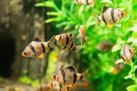
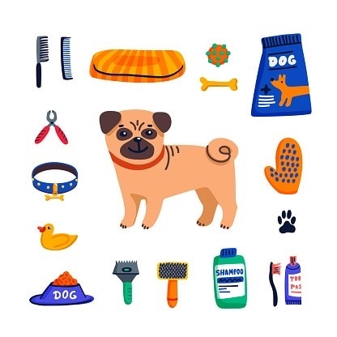
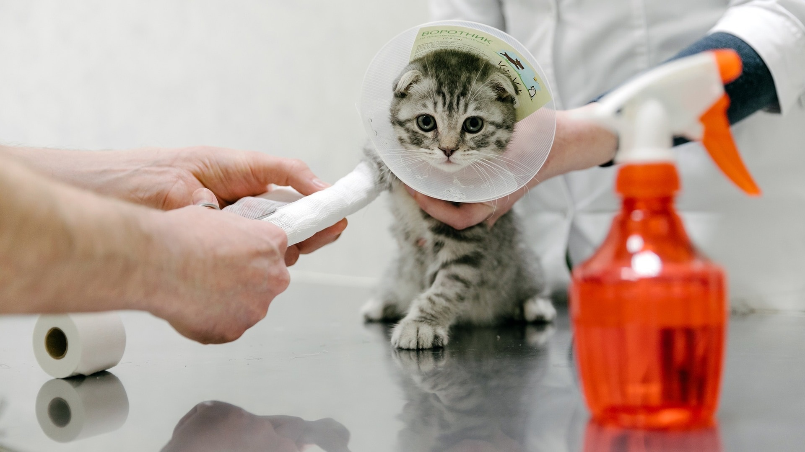

| SoftPow | |
|---|---|
| О нас Животные Популярные бренды Жизненный период Выставки |
Мы всегда рады предложить нашу информацию
«SoftPow» – это онлайн-ресурс, который предоставляет информацию обо всех видов
домашних питомцев. Мы собираем и предоставляем информацию о том, как ухаживать за
животными, о их природе и привычках, а также об их жизненном цикле. Наша цель - помочь
людям лучше понимать животный мир и создать более гармоничное сосуществование человека
и животных. Наши услуги доступны всем желающим в любое время суток.
Виды домашних животных
Домашние животные – это те, которых человек разводит и содержит в своем доме или на
улице. Как правило, они несут полезную работу или служат прекрасным спутником для
своих хозяев.
К числу домашних животных относятся:
Собаки
Один из самых распространенных видов домашних животных.Они являются преданными друзьями человека и могут выполнять различные функции: охранять дом, помогать охотнику, провожать людей в пути и т.д. Собаки имеют различные породы, каждая из которых имеет свои особенности. Некоторые породы очень энергичны и нуждаются в большом количестве физических нагрузок, в то время как другие породы более спокойны и могут быть отличными компаньонами для людей, которые предпочитают более умеренный образ жизни. Кроме того, собаки могут быть обучены различным командам и трюкам, что делает их отличными участниками в конкурсах по дрессировке. Однако, чтобы собака была хорошо воспитанной и дисциплинированной, необходимо уделять ей достаточно времени и внимания. Кошки
Еще один популярный вид домашних животных. Они отличаются своей ласковостью, независимостью и способностью ловить мышей и других грызунов.Кошки - это чистоплотные животные, которые требуют минимального ухода. Они могут быть кормлены как сухим, так и влажным кормом, но важно следить за качеством и составом корма. Кошки нуждаются в постоянном доступе к чистой воде. Кошки могут быть подвержены различным заболеваниям, поэтому важно регулярно проводить профилактические мероприятия, такие как вакцинация и обработка от паразитов. Также необходимо регулярно проверять здоровье кошки у ветеринара. Птицы
К ним относятся канарейки, попугаи, голуби и др. Они служат не только украшением дома, но и могут быть довольно полезными, например, как летающие посыльные. Птицы - это очень интересные и разнообразные животные, которые могут быть как домашними питомцами, так и обитать в дикой природе. Они требуют особого ухода и внимания. Птицы нуждаются в качественном и разнообразном питании, которое должно включать в себя зерновые культуры, фрукты, овощи и белковую пищу. Важно следить за тем, чтобы птица получала достаточное количество витаминов и минералов. Птицы могут быть подвержены различным заболеваниям, поэтому важно регулярно проводить профилактические мероприятия, такие как вакцинация и обработка от паразитов. Также необходимо регулярно проверять здоровье птицы у ветеринара. Рыбы
 Многие люди разводят рыбок в аквариумах. Они являются довольно неприхотливыми животными и могут послужить украшением любого интерьера. Рыбы нуждаются в качественном и разнообразном питании, которое должно соответствовать их виду и размеру. Некоторые предпочитают растительную пищу, а другие - мясную. Важно следить за температурой воды в аквариуме, чтобы она соответствовала требованиям рыб. Также необходимо регулярно менять воду и очищать фильтр. Рыбы нуждаются в местах для укрытия и отдыха, поэтому им нужны растения, камни и декорации в аквариуме. Хорошей идеей будет создать для рыб комфортное жилище, где они могут спокойно отдохнуть и плавать. Грызуны
К ним относятся хомяки, крысы, мыши, кролики и прочие животные. Хорошо подходят для детей и требуют минимального ухода. Грызуны нуждаются в качественном и разнообразном питании, которое должно включать в себя сено, овощи, фрукты и специальные корма для грызунов. Важно следить за тем, чтобы грызун получал достаточное количество витаминов и минералов. Грызуны очень любят играть и развлекаться, поэтому им нужны игрушки, колеса для бега и гнезда. Хорошей идеей будет создать для грызуна комфортное жилище, где он может спокойно отдохнуть и поиграть. Грызуны - это социальные животные, которые нуждаются в общении с другими грызунами или с людьми. Важно проводить время с грызуном, играть с ним и ласкать его. Это поможет создать тесную связь между владельцем и питомцем.
Пресмыкающиеся
К ним относятся змеи, ящерицы, черепахи и др. В целом это тоже довольно неприхотливые животные, но требуют особого отношения и общения. Пресмыкающиеся нуждаются в качественном и разнообразном питании, которое должно соответствовать их виду и размеру. Некоторые предпочитают мясную пищу, а другие - растительную. Важно следить за тем, чтобы пресмыкающийся получал достаточное количество витаминов и минералов. Пресмыкающиеся могут быть подвержены различным заболеваниям, поэтому важно регулярно проводить профилактические мероприятия, такие как вакцинация и обработка от паразитов. Также необходимо регулярно проверять здоровье пресмыкающегося у ветеринара. Пресмыкающиеся очень любят играть и развлекаться, поэтому им нужны игрушки, колеса для бега и гнезда. Хорошей идеей будет создать для пресмыкающегося комфортное жилище, где он может спокойно отдохнуть и поиграть.
Каждый вид домашних животных имеет свои особенности, поэтому перед тем, как завести
питомца, стоит обдумать все «за» и «против» и выбрать то, что больше всего подходит
для себя и своей семьи.
Уход
Уход за домашними животными - это ответственность, требующая определенных знаний и
умений. Вот несколько важных пунктов по уходу за домашними животными, а также
предостережения:

1. Питание: Соблюдайте правильное питание для своих животных, в зависимости от
их возраста, породы, физической активности и состояния здоровья. Обратите
внимание на качество корма, чтобы избежать проблем с пищеварением.
2. Уход за шерстью: Регулярно чистите и расчесывайте шерсть животного, особенно
если она длинная или густая. Это поможет избежать перхоти, заломов шерсти и
других проблем.
3. Гигиена: Важно следить за гигиеной животного и регулярно мыть его, если это
необходимо. Также необходимо ухаживать за зубами животного, чтобы избежать
зубных проблем.
4. Здоровье: Контролируйте состояние здоровья своего животного и регулярно
обращайтесь к ветеринару. Одним из главных условий здоровья животного является
профилактика болезней и своевременное лечение любых недугов.
5. Никогда не используйте на животных людские лекарства без совета
ветеринара.
6. Будьте осторожны при обучении своего животного новым трюкам, это может
привести к травмам или стрессу.
7. Соблюдайте правила гигиены и чистоты, особенно если у вас есть маленькие дети,
чтобы избежать передачи инфекций от животного к человеку.
8. Избегайте перепродукции - не позволяйте своему домашнему животному иметь
больше потомства, чем нужно. Это может быть опасным для здоровья матери и ее
потенциальных щенков/котят/щенков.
9. Важно учитывать общественные нормы, особенно в публичных местах, где может
быть большое скопление людей и животных.
10. Следуйте этическим и правовым принципам, касающимся животных, и не наносите
им вреда, как физического, так и психологического.
Частые болезни
Хорошее здоровье домашних животных - это залог их счастливой жизни, поэтому уход за
ними должен включать в себя предотвращение болезней. Некоторые из наиболее
распространенных болезней домашних животных включают:

1. Вирусные инфекции: к ним относятся бешенство, когда животное может привести
в летальный исход, а также кашель, гепатит, герпес и другие вирусные инфекции.
Важно следить за прививками своих домашних животных, чтобы предотвратить
развитие этих болезней.
2. Паразиты: к ним относятся блохи, клещи, глисты и другие вредители, которые
могут вызывать множество проблем со здоровьем вашего животного. Необходимо
регулярно проводить профилактику и лечение от блох и клещей, и следить за
гигиеной животного.
3. Аллергии: домашние животные также могут страдать от аллергий, вызванных
пылью, плесенью, пыльцой, пищей и др. Если у вашего животного есть аллергия,
необходимо консультироваться с ветеринаром и следовать рекомендациям по контролю
симптомов.
4. Болезни кожи: они могут быть вызваны различными причинами, такими как
инфекции, аллергии, грибковые инфекции и т.д. Симптомы могут включать в себя
зуд, красноту, шелушение, высыпания и другие проблемы. Необходимо обратиться к
ветеринару для консультации и лечения.
5. Общие проблемы со здоровьем: к ним относятся проблемы со старением,
ожирением, сахарным диабетом, заболеваниями сердца, проблемами суставов и др.
Важно следить за здоровьем животного, регулярно проводить осмотр у ветеринара и
следовать рекомендациям по диете и уходу за здоровьем своего животного.
6. Будьте осторожны при обучении своего животного новым трюкам, это может
привести к травмам или стрессу.
7. Соблюдайте правила гигиены и чистоты, особенно если у вас есть маленькие
дети, чтобы избежать передачи инфекций от животного к человеку.
8. Избегайте перепродукции - не позволяйте своему домашнему животному иметь
больше потомства, чем нужно. Это может быть опасным для здоровья матери и ее
потенциальных щенков/котят/щенков.
9. Важно учитывать общественные нормы, особенно в публичных местах, где может
быть большое скопление людей и животных.
10. Следуйте этическим и правовым принципам, касающимся животных, и не наносите
им вреда, как физического, так и психологического.
Некоторые предостережения при уходе за домашними животными:
- Никогда не давайте домашнему животному человеческие лекарства без консультации
ветеринара.
- Следите за гигиеной животного и регулярно обновляйте его корм и воду.
- Следите за температурными условиями, в которых живет ваше животное, и по
возможности обеспечьте ему место, где оно может укрыться от экстремальных погодных
условий.
- Не забывайте профилактику болезней и регулярные посещения ветеринара.
- Не требуйте от своего домашнего животного того, что он не может сделать, будьте
терпеливы и любящими.
- Избегайте использования химических средств для ухода за животными.
|